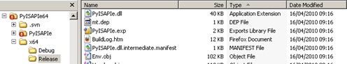

Compiling a 64 bit Version of PyISAPIe¶
- date:
2010-04-16 11:55
- author:
admin
- category:
python, web development
- tags:
64bit, iis, IIS7, msi, PyISAPIe, python
- slug:
compiling-a-64-bit-version-of-pyisapie
- status:
published
 Welcome to a veritable novella. I’ll jump straight to the end ?” there is no happy outcome, as yet, to this post there is a happy outcome! I have compiled a 64 bit PyISAPIe DLL (a program that runs Python at high speed under IIS), and it is up and running on Windows Server 2008 and IIS7. Many thanks to Phillip Stabon, the creator of PyISAPIe, for additional help, and for the latest version of PyISAPIe which makes compilation for different set ups much easier.
Some background information - I’ve not done any C++ for 10 years (and even then my most advanced program was to finish off a code sample on a hotel register for pirates ?” of the traditional kind). Also I’ve never used Subversion. Hence there are lots of pictures, and every step is detailed. If there’s anything missing let me know.
I’m not sure why I started doing this ?” the performance of Python using 32-bit version is fine, and since I started working on this Phillip Stabon, has mentioned he will be making a 64 bit DLL himself. However as there are many different versions of Python around, and different GIS tools rely on different versions it seemed a good idea to document how to do this from scratch.
In this example I’m using Visual Studio 2008, and a number of other tools that are detailed as I go along. I’ve also got the 64 bit compilation tools installed. There are a few notes from Phillip on compiling it for Windows 64-bit in the discussion lists (see quoted text underneath the post). Since this post was first published there is a newer discussion in the forums.
Anyway “How to Compile PyISAPIe for a 64-bit Server in 5 Easy Steps!”…
1. Get 64-bit Python¶
You’ll need a 64 bit version of Python. All my scripts were running and developed using Python 2.5.4 so I wanted to compile PyISAPIe to work with this.
The Python downloads are here. I initially thought that as my server has an Intel processor I should use the version for Win64-Itanium users. However it appears Itanium is only used on some very high spec servers, and I should actually use the python-2.5.4.amd64.msi file. To quote the Python site:
The binaries for AMD64 will also work on processors that implement the Intel 64 architecture (formerly EM64T), i.e. the architecture that Microsoft calls x64, and AMD called x86-64 before calling it AMD64. They will not work on Intel Itanium Processors (formerly IA-64).
If you are using the Itanium Python version on a x64 machine you’ll likely end up with the following error during compilation:
*Error ? 10 ? fatal error LNK1112: module machine type ‘IA64’ conflicts with target machine type ‘x64’ ? python25.lib *
The Python files are downloaded in a MSI (Microsoft Installer) file, and as I’m developing on a 32-bit laptop (to install on a 64-bit server later) I couldn’t install Python to access the files.
To workaround this I found a useful program called Les MSIérables. This extracts the files contained in an MSI without needing to install anything. I Had to click a few times around the interface before the extract button worked, but then I had a shiny new copy of the 64-bit Python files ready on my machine.
2. Get the PyISAPIe Source¶
I originally downloaded a zip of the latest PyISAPIe source code. However this is not the way to do things.. The build has an automated step which checks something in Subversion (or SVN - an online source control system), so the source code you compile needs to be a check-out. If you don’t do this you’ll get errors later on such as:
Error 2 fatal error C1083: Cannot open include file: 'Revision.h': No such file or directory
To connect to SubVersion I’d recommend downloading TortoiseSVN (in fact as one of its .exe tools is used in a pre-build step later on ?” its a requirement). This adds a context menu to Windows Explorer that allows you to connect to SVN and get the latest code. Set up a new folder in Explorer, then right click and select SVN Checkout.
The URL of the repository for the latest PyISAPIe code is http://pyisapie.svn.sourceforge.net/svnroot/pyisapie/Trunk/. Entering this URL and Clicking OK should start downloading the latest source files via the magic of the Internet.
3. Configure the Visual Studio Project¶
Once the source code has downloaded you should be able to open up the PyISAPIe.sln file which references the PyISAPIe.vcproj C++ project file. This is set up to compile the 32-bit version by default. You’ll want to change this using Build >> Configuration Manager >> x64. If this is the first time you are compiling a 64-bit DLL you’ll need to create a “New Solution Platform” as shown below:
If you try to compile now you may get the following error:
Error 2 fatal error C1189: #error :? Please define PYI_PY_VERSION at the project level.
We need to tell the compiler the appropriate Python version to use. This can be set by going to Project >> Properties >>? Configuration Properties >> C/C++ >> Preprocessor. If these options seem to be missing then make sure the project itself is selected in the Solution Explorer when clicking on Properties.
I’m using 2.5.4 so I set this value to be PY_25_4 (a list of valid codes can be seen in PyISAPIe.h from line 25 onwards). Also change the WIN32 variable to WIN64.
Another compile, another error (again apparently fatal):
fatal error C1083: Cannot open include file: 'Python25/include/Python.h': No such file or directory
Looking at line 84 in PyISAPIe.h you can see the header file wants to include the Python files:
#define PYI_PY_VERSION_MAJOR PY_25
#include <Python25/include/Python.h>
#include <Python25/include/structmember.h>
#include <Python25/include/frameobject.h>
To allow these files to be correctly referenced I copied the entire Python25 folder (see step 1) into a new Python\x64 folder. The folder structure should now look something like this:
The project is set up to look for the Python files in the Python\x64 folder (for 64 bit release builds) by default. This setting can be seen in the “Additional Include Directories” shown below. The same project can be used with different versions of Python by adding folders such as Python\x64\Python26 and changing the project environment variables.
4. Making the Pre-build Step¶
In the original project file there is a pre-build step that checks something in SubVersion (its description is “Subversion Revision Scan”). It can be seen at Project >> Properties >> Configuration Properties >> Build Events >> Pre-Build Event:
It runs the following command from the (Windows not Visual Studio) command line:
subwcrev . PyISAPIe\Revision.in PyISAPIe\Revision.h
Fortunately the command line tool SubWCRev is downloaded as part of TortoiseSVN. If you don’t have the prebuild step set up correctly then you may receive the following errors:
error PRJ0019: A tool returned an error code from "Subversion Revision Scan"
The syntax for this command is:
SubWCRev WorkingCopyPath [SrcVersionFile DstVersionFile] [-nmdfe]
Where WorkingCopyPath is the path to the working copy being checked.
If you aren’t using a copy of the sourcecode from SVN then you will
receive errors such as “SubWCRev : ‘D:\PyISAPie’ is not a working
copy.” If you have only just installed TortoiseSVN then make sure you
log off or restart Windows so that your environment variables are
updated.
The prebuild step should work “out of the box”, however if you still get errors in Visual Studio then running the following commands (pointing to your project folders) from a Windows Shell may provide more useful debugging information.
cd D:\PyISAPIe\PyISAPIe
subwcrev \ Revision.in Revision.h
All that is actually required by this pre-build step is to generate a Revision.h file of 5 lines..
5. Compile!¶
Another attempt at compiling and I get:
Error 14 fatal error LNK1104: cannot open file 'python25_d.lib'
From this post I read “python25_d.dll is the debug version. If you want to compile against python25.dll instead, you need to build a Release build of your application, not a Debug build. Or, you can go to python.org and download the debug python25_d.lib and python25_d.dll.”
I changed my build to Release and on the next compile…it worked! And look I have proof..
¶
Aftermath¶
I then set up the PyISAPIe.DLL on IIS7 (using the same process as I detailed here), but using my newly compiled 64-bit, and using the DefaultAppPool which should run 64 bit applications. I also installed the Python 2.5.4 for 64-bit AMD processors (the same MSI as detailed above).
Unfortunately I currently get HTTP 404.4 errors, with nothing in the logs of use to help diagnose further. I suspect the references to WIN32 may be the issue, but I’ve no idea what to change them to. I’m posting to the PyISAPIe forum with the hope of trying to get this working, and hope that this is not the final revision of this post.
- orphan:
Comments¶
1. Tess **
My MBA team and I have created a blog on GIS and its multiple business applications. We’ve become quite interested in the topic. We’d love for you to check out our blog and let us know what you think!
Thanks!
Reply2. Mark Volz **
When I was trying to build, using the following command, I kept getting errors that the files could not be found:
C:\Mapserver\mapserver-6-0\mapscript\csharp\*.dll | …
All of the files are in the correct place. Any ideas on how to fix the problem?
Thanks
Reply3. Sowmya **
This is a nice blog. I could successfully compile mapserver using your article. Thank you very much. Could you please give me instructions how to compile csharp mapscript also.
Add Comment